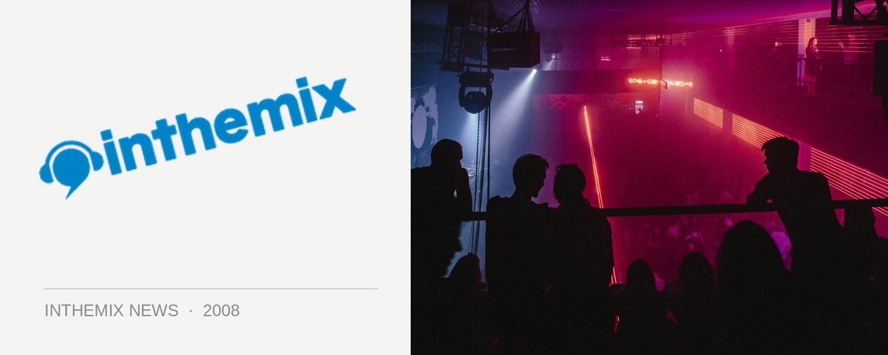

Playground Weekender lifts the lid on lineup additions + playing times
The Playground Weekender was the favourite of the season for those with musical tastes that are a little left of centre, and it’ll be returning to Wiseman’s Ferry in Sydney for a three-day event on the weekend of the 7th of March. News just to hand, a whole bunch of lineup additions to the festival have been revealed, as well as what acts will be playing on what day.
Among the recent additions to the line-up, experimental indie, folk and hip hop act Cocorosie will be returning in support of their recent album The Adventures of Ghosthorse and Stillborn, along with local hip-hop hero Urthboy and other live acts across a whole range of musical styles like The Lovetones, Grrilla Step, Cassette Kids, Belles Will Ring and Grafton Primary*.
On the DJ, we’l lalso be enjoying Stevie Sole Middleton of the famed soulful house label Solemusic in Scotland, acid jazz originator Russ Dewbury, the organiser of The Big Chill festival in the UK Pete Lawrence, as well as a whole bunch of local favourites like Mark Prichard, Telefunken, Jimi Polar, Alex Taylor, The Heat, Mo’Funk, John Glover and many more. The second weekend of March is shaping up to be another weekend of fine music…
Check out ITM’s Full Coverage page for the Playground Weekender festival for more info, and here’s the list of who’ll be playing over the three days…
Friday 7th March:
Grrilla Step
Stick Figures
Blue Juice
Theatre of Disco
Disco Punx
Nude DJs
Cuthbert & the Nightwalkers
Dead Letter Chorus
Mystic Jaguar
G-Wiz
The Heat
Harry Hunter
+more TBA
Saturday 8th March (fancy dress night):
Kruder & Dorfmeister (4 hour audiovisual set)
Norman Jay
Crazy P
Ben Lee
Josh Pyke
Tom Middleton
Tiefschwarz
Steve Bug
Stevie Sole Middleton
Dappled Cities Fly
Urthboy
Kid Kenobe
Will Saul
Telefunken
Alex Taylor
John Devecchis
Jimi Polar
Poxymusic,
Erin Marshall
Jamie Lloyd
The Cut
Ro Sham Bo
Declan Lee
Ben Korbel,
Peter Glass
Pete Dot
Kato & James Taylor
The E.L.F
S.Y.L.K
Tha Fizz
Cassette Kids
Wax Motif v Hugga Thugg
Grafton Primary
Adam Bozzetto & Money$hot
The Holidays
Diago
The Lovetones
drugmoney & MC Gaff E
Live Art Rush
Temnien V’s Shamozzle
Reptiles,
Gabriel Clouston
+ more TBA
Sunday 9th March
Maximo Park
Ian Brown
The Wombats
Cocorosie
Kora
Norman Jay
Ben Watt
Spirit Catcher
Ralph Lawson
LTJ Bukem
South Rakkus Crew
Tom Middleton (acid house set)
Mark Walton’s Fretless
Stevie Sole Middleton
Mark Pritchard
Pete Lawrence
Mo Horizons
Pty Ltd
Mo Funk
Michael Doney
Russ Dewbury
Regal
Belles Will Ring
The Dardanelles
The Devoted Few
DJ Loaded
The Seabellies
Krill
The Jezabels
Throw Shapes
Pip Branson Corporation
The John Steel Singers
Brag Bitches
Craig Obey
John Glover
Ash Le Rouge
Lummy and Gaz
Langon Cooke & Pierro
+more TBA